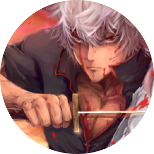
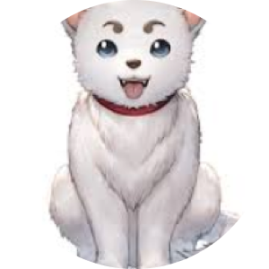
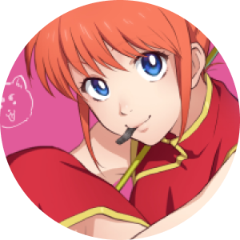
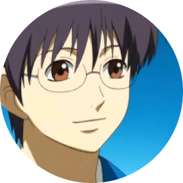

SOBRE
HISTÓRIA & OPINIÃO
Gintama é a história de um faz tudo chamado Gintoki, um samurai sem respeito com regras impostas pelos invasores e que está pronto para pegar qualquer trabalho para sobreviver. Na minha opinião é o melhor anime que eu já assisti. Contém uma história muito boa, contando o passado dos personagens, fazendo-nos cativar com os mesmos. Gintama é um anime que nos faz sorrir, chorar e ficarmos apreensívos com a história. Resumindo: É SIMPLESMENTE INCRÍVEL.
CATEGORIAS
AÇÃO
COMÉDIA
DRAMA
IMAGENS
PERSONAGENS PRINCIPAIS
-

Gintoki Sakata
É o personagem principal da história. Ele é um samurai. Apesar da proibição de usar sabre, ele ainda carrega um sabre de madeira, que disse ter comprado durante uma excursão ao Lago Toyako. Ele é o chefe da “Agência Freelance do Sr. Gin”, junto com Kagura e Shinpachi, ele aceita todos os serviços desde que seja pago. Infelizmente para ele, seu trabalho o envolve em todos os tipos de situações perigosas. Seu comportamento indiferente, sua tendência a falar trivialidades e falar bobagens muito sérias são suas características mais visíveis. Ele usa cabelos ondulados com permanente que, segundo ele, são atribuídos à falta de amor ou a uma maldição.
-

Sadaharu
É um cão gigante adotado por Kagura em quem ela encontrou um companheiro adequado para sua força (e que na verdade se tornará um deus, um inugami).
-

Kagura
Kagura é um alienígena pertencente à espécie Yato. Apesar de sua aparência de menina, ela obtém força sobre-humana de suas origens. Munida de sua força, um guarda-chuva blindado que também serve de arma de fogo, além de uma franqueza desconcertante, ela se junta ao grupo de Gintoki a fim de economizar dinheiro para voltar ao seu planeta. Ela adora Otae como uma rainha e o chama de " Chefe ". Apesar de sua aparência frágil, ela come muito, especialmente sukonbu , uma alga marinha marinada em vinagre e particularmente azeda que ela adora. Ela frequentemente compete com Okita do Shinsengumi.
-

Shinpachi Shimura
Shinpachi Shimura é um jovem de dezesseis anos que trabalha com sua irmã no dojo de seu falecido pai, abandonado desde a proibição de portar uma espada. Ele conhece Gintoki no início da história e fica surpreso com sua atitude petulante, mas sincera. Ele se junta a ele, após resgatar sua irmã, a fim de encontrar seu próprio caminho. Para sua grande decepção, desde sua associação com Gintoki, os negócios não têm sido fáceis ou prósperos e ele parece estar ajudando Gintoki a pagar o aluguel mais do que qualquer outra coisa. Ele representa o elemento mais sensato do grupo, mesmo que os siga em seus delírios. Ele também tem uma paixão: é o líder da Guarda Imperial de O-Tsū, um fã-clube dedicado a um ídolo em ascensão.
HASEGAWA TAIZOU - MEU PERSONAGEM PREFERIDO ❤
HASEGAWA TAIZOU ❤
Apesar de não ser um dos personagens principais, sem dúvidas , o Hasegawa Taizou (ou MADAO) é considerado o meu personagem favorito. Sempre que ele aparece no anime, causa um impacto forte na cena; sendo de forma hilária, triste, ou até mesmo de forma heróica. Não é à toa que eu utilizo o nome e a foto de perfil dele em todo o canto! Inclusive, como vocês podem ver, criei até uma seção para este personagem!
Você é uma lenda, Hasegawa Taizou ❤
CITAÇÕES
-
"O País? O Céu? Você pode tê-los. Eu estou ocupado demais protegendo aquilo que está bem na minha frente. Eu não sei o que vai me acontecer no futuro, mas quando alguma coisa cai aos meus pés, o mínimo que posso fazer é pegá-la."
-
"Se você começar a falar do passado, todos parecerão criminosos!"
-
“Lágrimas são úteis para lavar os problemas e os sentimentos tristes. Mas, quando você cresce, você aprende que existem coisas tão tristes que nunca poderão ser lavadas pelas lágrimas. Que existem lembranças dolorosas que nunca devem ser lavadas. Então as pessoas que são realmente fortes riem quando querem chorar. Elas aguentam toda a dor e a tristeza enquanto riem com todo mundo.”
-
"Eu não conheço esses números! Um homem só precisa conhecer o número um para se dar bem nesse mundo.”
-
"Todos em Edo são assim. São frios e insensíveis. É uma maneira inteligente de viver a sua vida. Pessoas como você, que se preocupam com outras, são idiotas. No final, os idiotas são apenas usados. Mas eu gosto desses idiotas. Embora eu odeie você."
-
"Saquê é muito bom. Você esquece todos os seus problemas, mesmo que só por um momento. No entanto, terá que lembrar deles amanhã. E doerá ainda mais do que no dia anterior. Não se foge de coisas assim. Especialmente das coisas que mais quer esquecer."
INFORMAÇÕES
POR QUE GINTAMA?
Gintama é um anime especial. É realmente difícil encontrar um anime único como este. Então, já que ele é único, que tal fazer um site apenas sobre ele? Ele merece.
ASSISTIR
Para assistir Gintama, clique neste link:
LINKCONTATO
- (11) 4774-4700
- caiocoghi@gmail.com
- Rua Elton Silva, 905